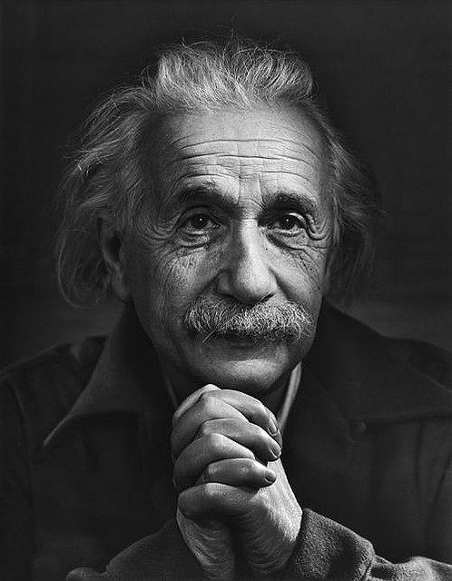

SumberALBERT EINSTEIN adalah fisikawan teoretis asal Jerman yang dikenal karena Teori Relativitas dan kontribusinya dalam mekanika kuantum. Ia dianggap sebagai salah satu ilmuwan paling berpengaruh dalam sejarah.
Nama Lengkap: Albert Einstein Lahir: 14 Maret 1879, Ulm, Kekaisaran Jerman Meninggal: 18 April 1955, Princeton, New Jersey, AS Bidang: Fisika Teoretis Dikenal karena: Teori Relativitas (E = mc²) Efek fotolistrik (memenangkan Nobel Fisika 1921) Gerak Brownian Persamaan medan gravitasi
Einstein berasal dari keluarga Yahudi kelas menengah. Pada 1896, ia masuk ETH Zurich untuk belajar fisika dan matematika. Sempat kesulitan mendapatkan pekerjaan akademik sebelum akhirnya bekerja di Kantor Paten Swiss di Bern.
1. Teori Relativitas Khusus (1905) Einstein menunjukkan bahwa waktu dan ruang bersifat relatif terhadap pengamat. Rumus terkenalnya: E = mc², yang menunjukkan hubungan antara energi dan massa. 2. Efek Fotolistrik (1905) Einstein menjelaskan bagaimana cahaya berperilaku seperti partikel (foton), yang membantu pengembangan mekanika kuantum. Karya ini membuatnya memenangkan Hadiah Nobel Fisika pada 1921. 3. Teori Relativitas Umum (1915) Menggambarkan gravitasi sebagai kelengkungan ruang-waktu akibat massa. Terbukti benar pada 1919 ketika cahaya bintang melengkung oleh gravitasi Matahari, diamati oleh Arthur Eddington. 4. Mekanika Kuantum dan Atom Berkontribusi dalam pemahaman tentang gerakan partikel kecil (Gerak Brownian) dan teori Bose-Einstein Condensate. PERAN DALAM PERANG DUNIA II DAN BOM ATOM 1933: Einstein meninggalkan Jerman setelah Nazi berkuasa dan pindah ke AS. 1939: Menandatangani Surat Einstein-Szilárd yang memperingatkan Presiden Roosevelt tentang kemungkinan Jerman mengembangkan bom atom. Namun, ia menentang penggunaan bom atom yang akhirnya dijatuhkan di Hiroshima dan Nagasaki (1945).
Menjadi simbol pasifisme dan perjuangan hak asasi manusia. Meninggal pada 18 April 1955 di Princeton akibat aneurisma aorta. Otaknya dipelajari oleh ilmuwan setelah kematiannya untuk memahami kecerdasannya.
H ✅ Dampak Positif: Merevolusi fisika modern dengan relativitas dan mekanika kuantum. Memengaruhi perkembangan teknologi seperti GPS, tenaga nuklir, dan laser. Menjadi ikon perdamaian dan kebebasan intelektual. ❌ Dampak Negatif: Kontribusinya secara tidak langsung memicu pengembangan bom atom (meskipun ia menentangnya). Albert Einstein tetap menjadi salah satu ilmuwan paling berpengaruh sepanjang sejarah, dengan kontribusinya terus digunakan hingga hari ini.